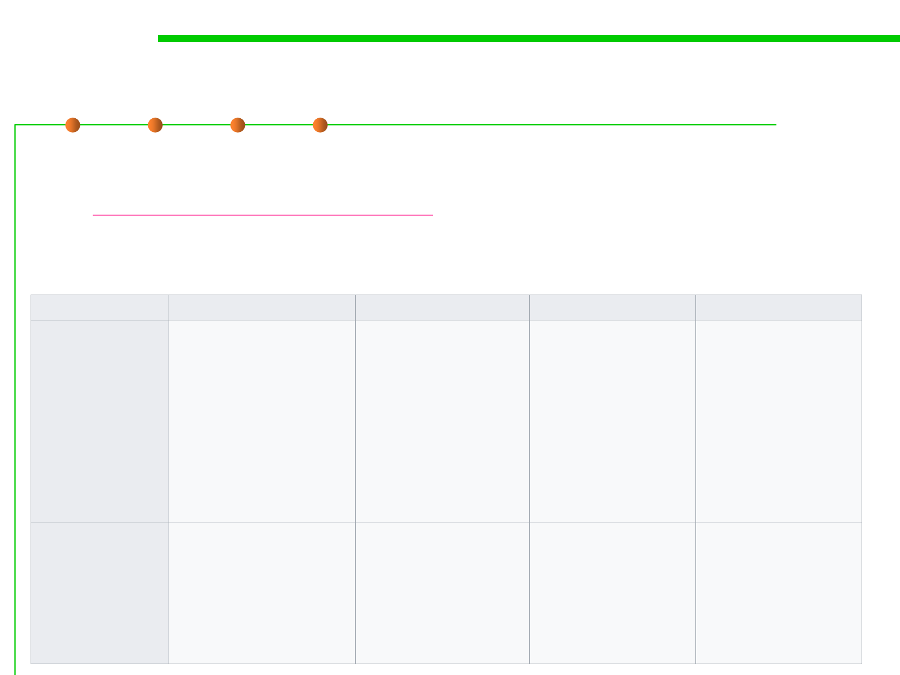

Log4j
7.4 Debugging
▪ Apache Log4j is a Java-based logging utility.
– http://logging.apache.org/log4j/
– Apache log4j is probably the best-known Java logging library, and ports
exist to most major languages.
Framework
Log4J
Supported log levels
FATAL
ERROR
WARN
INFO
DEBUG
TRACE
Standard appenders
Popularity
AsyncAppender,
JDBCAppender,
JMSAppender,
LF5Appender,
NTEventLogAppender,
NullAppender,
SMTPAppender,
SocketAppender,
SocketHubAppender,
SyslogAppender,
TelnetAppender,
WriterAppender
Widely used in many
projects and platforms
Cost / license
Apache License, Version
2.0
Java Logging API
SEVERE
WARNING
INFO
CONFIG
FINE
FINER
FINEST
Sun's default Java Virtual
Machine (JVM) has the
following:
ConsoleHandler,
FileHandler,
SocketHandler,
MemoryHandler
Comes with the JRE